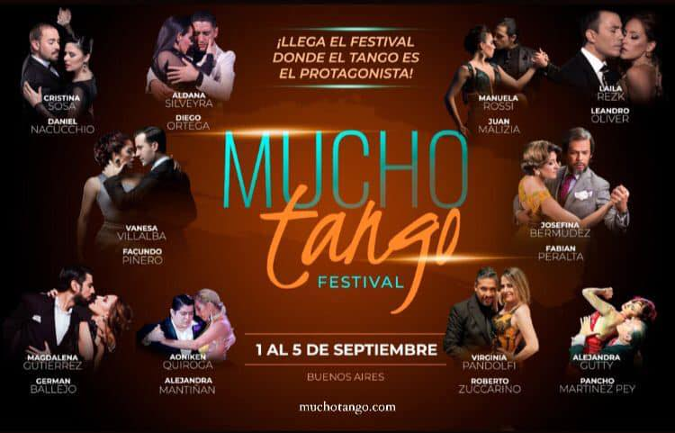
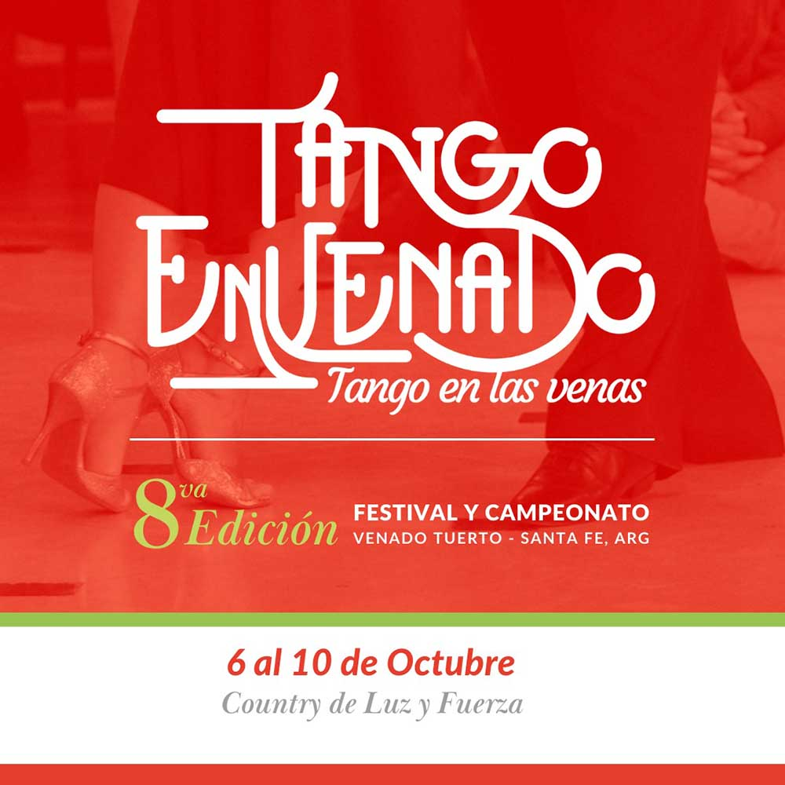

EVENTOS PROXIMOS DE TANGO
Tango BA Festival y Mundial es el encuentro tanguero más importante del mundo. Se trata de una cita anual obligada para celebrar la música que identifica a Buenos Aires como ninguna, a través de conciertos, exhibiciones, clases, charlas y, por supuesto, el Campeonato Mundial de Tango, la competencia de baile de mayor trascendencia internacional. Este año la cita se renueva pese al complejo contexto del COVID-19: Tango BA se adapta, ofreciendo una amplia programación gratuita y su tradicional Mundial de Baile a través de plataformas digitales, pero con toda la potencia del género, de su historia, sus creadores y su público. Porque ya lo dice la canción: “Ese es el tango, canción de Buenos Aires / Nacido en el suburbio que hoy reina en todo el mundo”.
"llega el festival donde el tango es el protagonista" Este evento convoca a los mayores referentes del tango a nivel mundial. Milongas, clases, y exhibiciones de maestros, convierten desde el 1 al 5 de septiembre en una cita imperdible de tango
FESTIVAL Y CAMPEONATO TANGO ENVENADO CATEGORÍAS : TANGO SALÓN - ADULTOS AMATEURS(-50) - SENIOR AMATEURS(+50) - PROFESIONALES -TANGO ESCENARIO (Pareja) - TANGO ESCENARIO ADULTOS (-50) - TANGO ESCENARIO SENIOR (+50) -GRUPO COREOGRAFICO JURADO + VOTO del PÚBLICO. Organiza: Andrea Fernandez Acerbi Cel de contacto: + 54 9 11 37560479 Venado Tuerto, cuna de la Marcha San Lorenzo